Virtualización del almacenamiento
Temas de ENCO · 9/13
- 1. Formatos de Servidores - Racks y Blades
- 2. Centros de Procesamiento de Datos (CPDs)
- 3. Virtualización de Servidores
- 4. Dispositivos de Almacenamiento
- 5. Subsistemas de Disco
- 6. Fibre Channel y redes SAN
- 7. Almacenamiento IP
- 8. Sistemas de ficheros y almacenamiento en red
- 9. Virtualización del almacenamiento
- 10. Backup
- 11. Backup en red y software para backup
- 12. Archivado de la información
- 13. Hardware para backup
9.1 Qué es la virtualización del almacenamiento
La virtualización del almacenamiento es separar la implementación física de los dispositivos de almacenamiento de su representación lógica, que es lo que ven y usan los sistemas operativos, las aplicaciones y los usuarios. Los servidores trabajan con dispositivos virtuales (discos, cintas) y una capa intermedia los traduce a los dispositivos físicos reales.
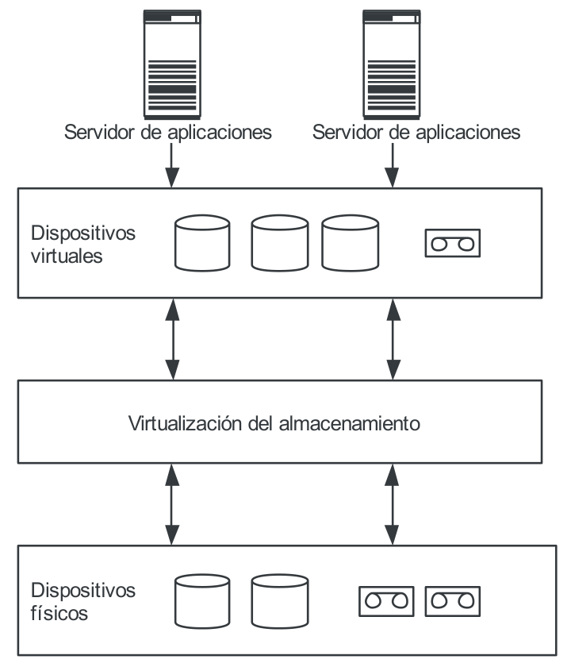
Analogía
Es como la memoria virtual de un SO: cada programa cree tener un espacio de direcciones propio y continuo, pero el SO lo reparte por trozos de RAM física (e incluso de disco) sin que el programa se entere.
En el esquema general, funciones que hasta ahora estaban repartidas (el sistema de ficheros y el gestor de volúmenes en cada servidor, la "inteligencia" y el RAID en cada subsistema de discos) pasan a una entidad de virtualización central en la red, que sirve a todos los servidores y dispositivos (discos y bibliotecas de cintas).
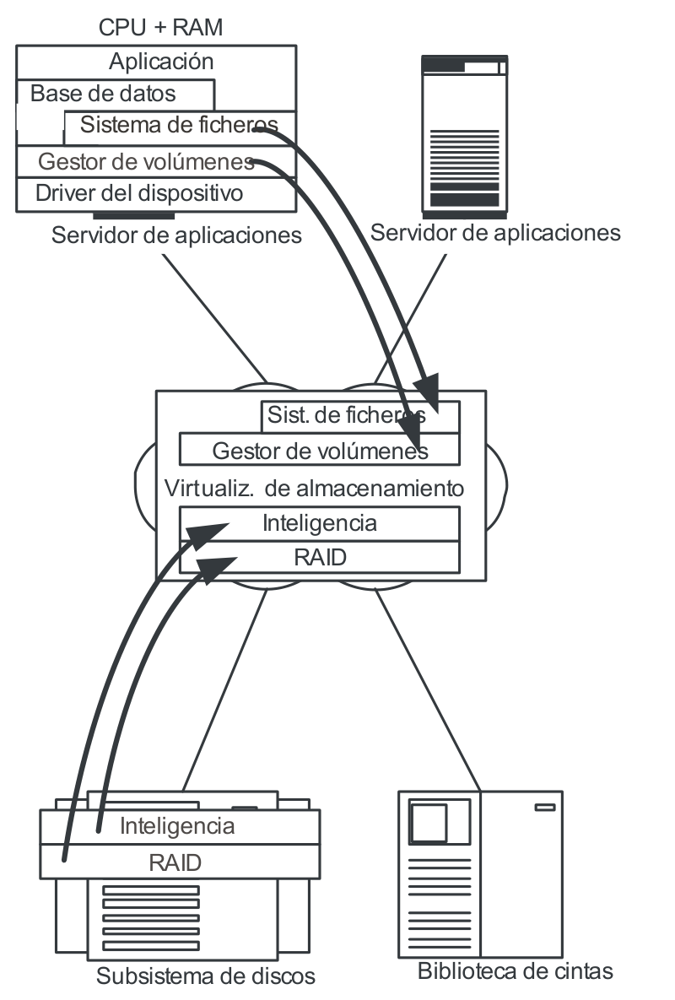
9.2 Dónde se implementa
La virtualización puede hacerse en cualquier punto del camino entre la aplicación y el disco: en el gestor de volúmenes (software del servidor), en el HBA, en la red de almacenamiento o en el subsistema de discos.
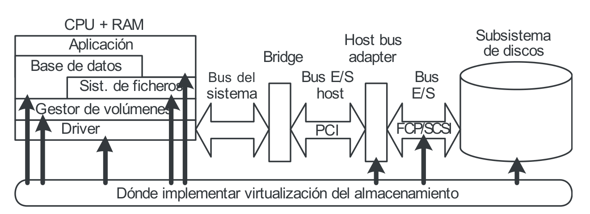
| Dónde | Ventajas | Desventajas |
|---|---|---|
| Subsistema de disco | No carga la red: las funciones (RAID…) se hacen donde están los datos | Requiere hardware específico: el controlador del subsistema |
| Red de almacenamiento | Gestión más eficiente de todos los recursos | Requiere hardware y/o software específicos: la entidad de virtualización en la red |
| HBA | No carga la CPU | Carga los buses de E/S |
| Gestor de volúmenes | Más rendimiento por redundancia de buses; más fiabilidad | Carga los buses y la CPU |
Lo que cambia en cada caso es dónde se duplica un bloque A que se escribe en espejo:
- En el subsistema de discos: el servidor envía A una sola vez y el subsistema lo duplica internamente.
- En la red: A viaja una vez hasta la red y un elemento de esta lo copia hacia los dos discos.
- En el HBA: A cruza una vez los buses del servidor y el HBA lo envía a los dos destinos.
- En el gestor de volúmenes: el servidor envía A dos veces desde el principio, por todos los buses.
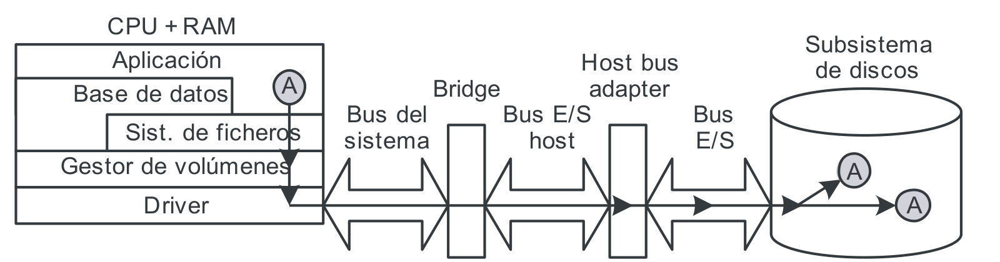
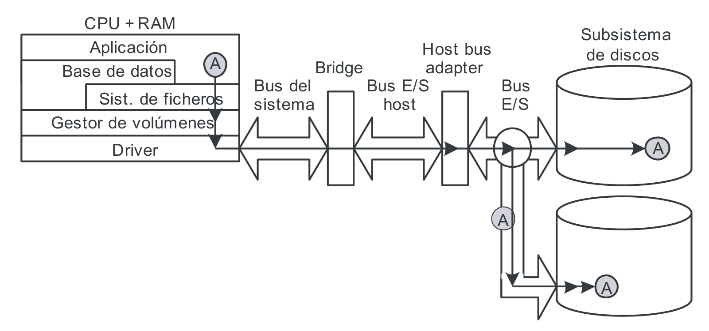
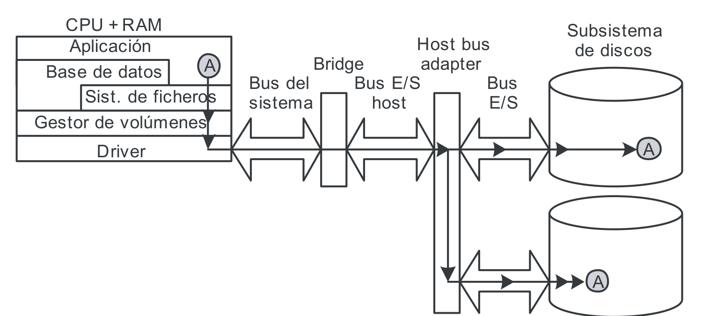
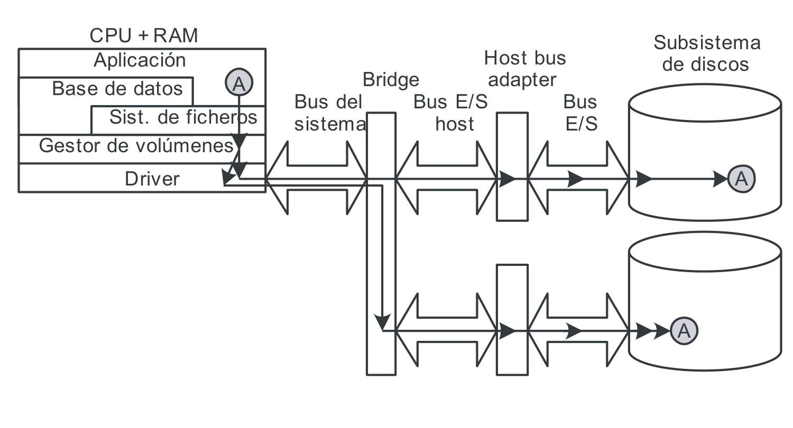
9.2.1 Mirroring y striping en el gestor de volúmenes
- Mirroring (RAID 1) en el gestor de volúmenes: es el gestor quien envía los datos por duplicado a través de buses, adaptadores, HBA y conexiones hasta los dispositivos. Es sencillo, pero la carga de buses y redes se duplica.
- Striping (RAID 0) en el gestor de volúmenes: la mitad de los datos va a un subsistema de discos y la otra mitad a otro (A y C a uno; B y D al otro). Así se balancea la carga de los HBA, de la red y de los subsistemas, con un pequeño aumento de carga en el servidor.
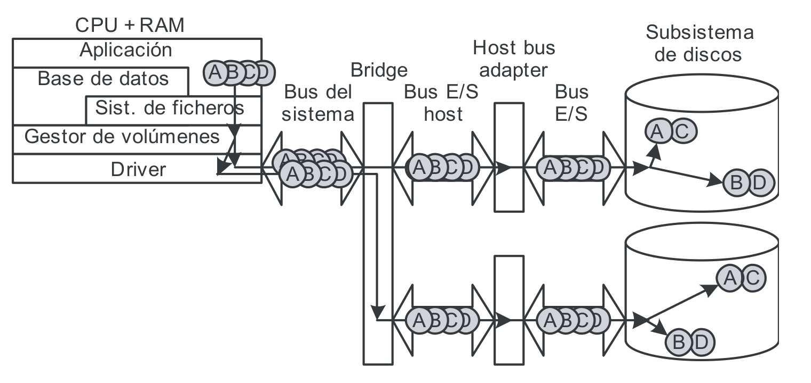
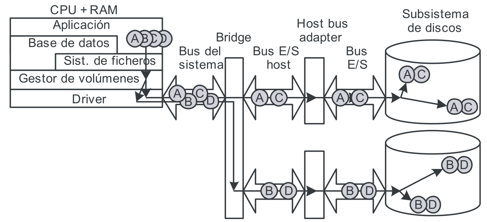
9.3 Por qué virtualizar: limitaciones de las redes sin virtualizar
Sin virtualización, una red de almacenamiento tiene tres tipos de limitaciones:
- Por su arquitectura: hay una conexión directa servidor–dispositivo, así que cualquier cambio en la red hay que trasladarlo también a los servidores, y no se puede compartir espacio de disco (el servidor B no puede usar el espacio libre del A aunque esté en el mismo subsistema).
- Por su implementación: incompatibilidad entre dispositivos distintos (cada servidor necesita el driver de cada tipo de subsistema; en la práctica, una red = un fabricante), y no es fácil combinar dispositivos de gama alta con otros de gama media/baja.
- Por los requisitos de los datos: cuesta distinguir datos importantes de los que no, y datos que cambian a menudo de los que no (para darles el almacenamiento adecuado).
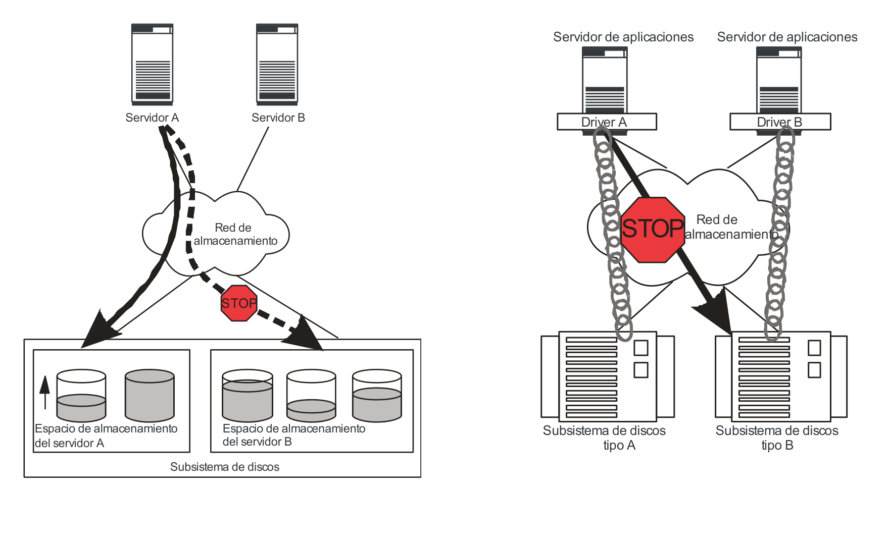
Izquierda: el servidor A no puede usar el espacio libre del B (STOP). Derecha: el servidor con el driver A no puede usar el subsistema tipo B.La virtualización permite:
- Simplificar la administración.
- Aprovechar del todo la red de almacenamiento: uso eficiente de los recursos y mejor rendimiento, protección y disponibilidad.
- Funciones avanzadas: backup y archivado, migración de datos y control de acceso al compartir datos.
9.4 Requisitos de una buena implementación
- Entidad de virtualización: redundante, administrable desde una consola centralizada y compatible con almacenamiento no virtualizado.
- Reemplazo de dispositivos en caliente sin perder datos.
- Asignación dinámica: aumentar o reducir sobre la marcha el espacio asignado.
- Migración de datos: mover los datos según perfiles de uso y la velocidad de acceso necesaria.
- Más rendimiento mediante cachés, striping y mirroring.
- Disponibilidad por redundancia: en los dispositivos (RAID) y en las conexiones.
- Backup y archivado en red basados en reglas.
- Compartición de datos: gestionar sistemas de ficheros desde la propia entidad de virtualización.
- Privacidad: gestión de derechos de acceso y permisos.
9.5 Virtualización a nivel de bloques y de ficheros
- A nivel de bloques: la entidad de virtualización ofrece al servidor un disco virtual formado por bloques que en realidad están repartidos en varios discos físicos (bloques 1 y 2 en uno, 3 y 4 en otro). El sistema de ficheros sigue en el servidor, que lee y escribe bloques (como una SAN).
- A nivel de ficheros: la entidad de virtualización incluye además el sistema de ficheros, así que el servidor pide ficheros (como un NAS).
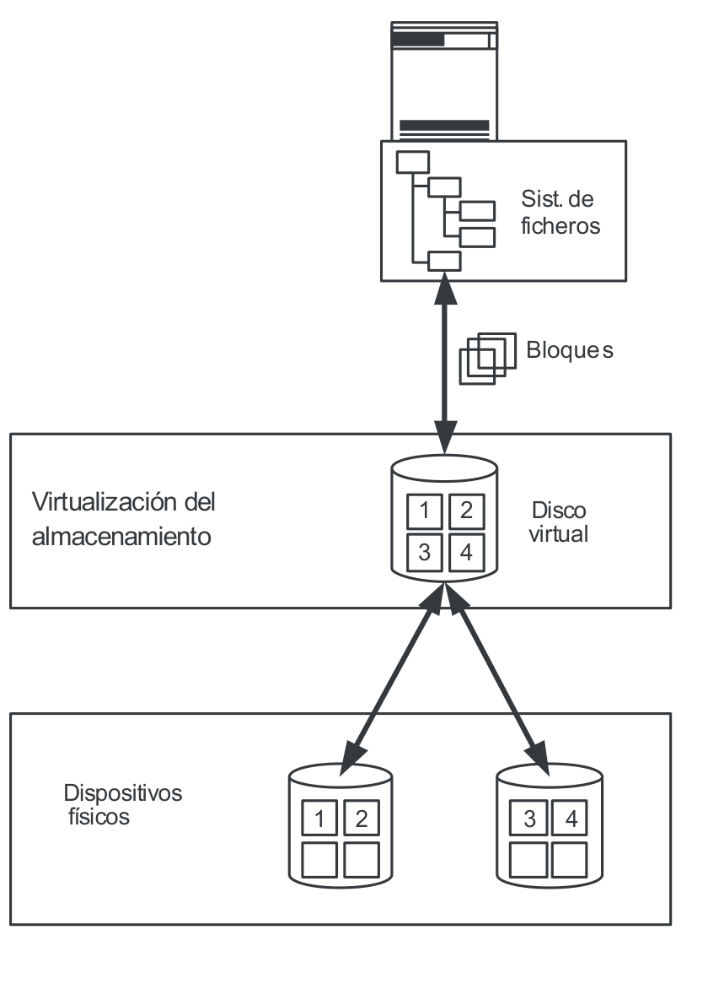
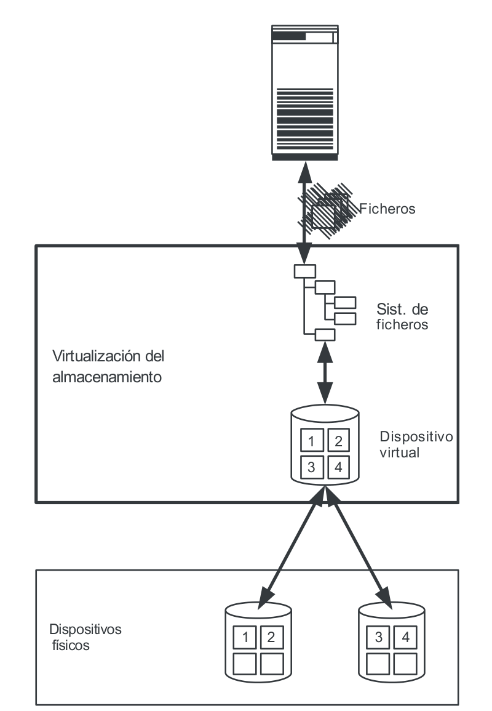
9.6 Virtualización en el servidor, en los dispositivos o en la red
| En el servidor | En los dispositivos | En la red | |
|---|---|---|---|
| Ventajas | Técnicas conocidas y probadas; puede integrar varios sistemas de almacenamiento; no requiere hardware (menos coste y menos fallos) | Solo hay que administrar los subsistemas o NAS; no carga los buses de E/S con RAID o snapshots; se desacopla de los servidores (heterogeneidad); no carga los servidores | Multifabricante; servidores con distintos SO; da mirroring, copias, etc. incluso con dispositivos básicos; administración centralizada de toda la red; no carga servidores ni dispositivos |
| Inconvenientes | Hay que administrar cada servidor por separado; más carga en el servidor; posibles incompatibilidades con aplicaciones; limitada a lo accesible desde ese servidor y a servidores individuales (salvo clústeres) | Dependiente del fabricante (incompatibilidades importantes); limitada a sistemas de almacenamiento individuales | Necesita hardware y software especializado; la entidad de virtualización puede ser un cuello de botella; tecnología nueva, sobre todo a nivel de fichero |
Para entenderlo mejor
Storage virtualization — Wikipedia — virtualización basada en host, en dispositivo y en red, con sus pros y contras (artículo, inglés).
9.6.1 Productos de ejemplo
- Coraid EtherDrive VSX Storage Virtualizer: centraliza y agiliza la gestión de volúmenes lógicos (LVM), los snapshots/snapclones y la replicación remota.
- IBM SAN Volume Controller (SVC): orientado a Fibre Channel, con módulos enrackables en clúster; virtualiza muchos aspectos de la red: LUN virtuales, mirroring local y remoto, snapshots…
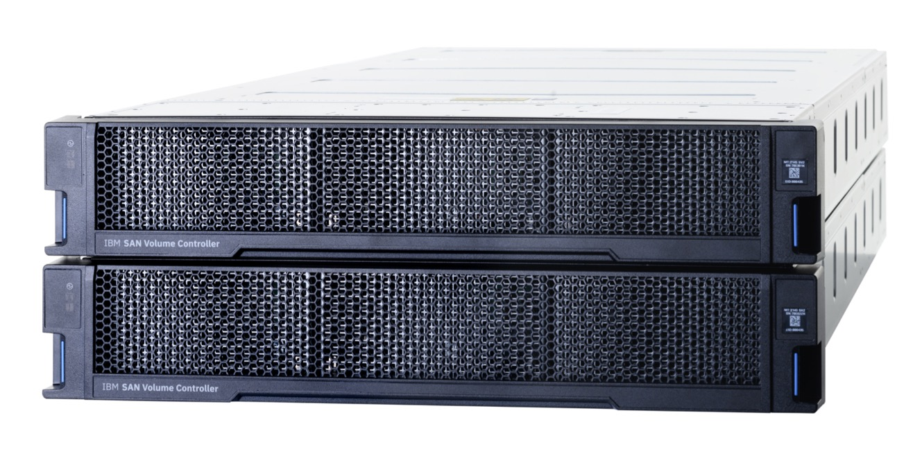
9.x Ideas clave
- Virtualizar = separar lo físico de la representación lógica que ven SO, aplicaciones y usuarios.
- Dónde: subsistema (no carga la red, HW específico), red (gestión global, necesita entidad de virtualización), HBA (no carga CPU, sí buses), gestor de volúmenes (carga buses y CPU).
- Mirroring en el gestor duplica la carga de buses y red; striping en el gestor reparte la carga entre HBA, red y subsistemas.
- Sin virtualizar: conexión directa servidor–dispositivo, no se comparte espacio, un fabricante por red, no se diferencian datos por importancia o cambio.
- Requisitos: entidad redundante y centralizada, cambio en caliente, asignación dinámica, migración, rendimiento (caché, striping, mirroring), redundancia, backup por reglas, permisos.
- Bloques (disco virtual, sistema de ficheros en el servidor) vs ficheros (sistema de ficheros en la entidad de virtualización).
- Servidor (barato, pero por servidor), dispositivos (sin carga, pero atado al fabricante), red (multifabricante y centralizada, pero HW especializado y posible cuello de botella). Ejemplos: Coraid VSX, IBM SVC.